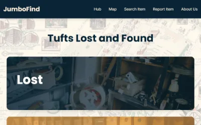
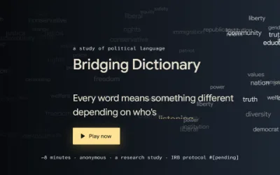
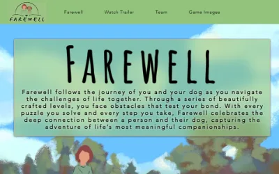

About
I'm a software developer, psychology student, and researcher. I look at technology from three angles: how it's built, how people experience it, and what it teaches us about the mind.
I'm a CS and Psychology double major at Tufts University, and all three angles show up in my work. As Project Manager for a 12-developer JumboCode team, I'm leading the build of an AI-powered video transcription and metadata pipeline for Somerville Media Center, a nonprofit with a 42-year video archive. I plan our roadmap, run weekly sprints, and turn the client's needs into features the team can build.
As a Research Assistant with the Human-AI Nexus Group at Northeastern University, I design and build web-based games that study how people across the political spectrum perceive politically charged language. There, technology is a tool for understanding how people think.
I'm looking for Summer 2027 internships in product management, software engineering, or UX research, especially roles that combine technical work with understanding users. Feel free to reach out!
Experience
-
Sep 2026 — Present
Teaching Assistant · CS160 Algorithms, Tufts University
Hold weekly office hours for 90+ students and lead recitations for 15, breaking down algorithm design and proofs with concrete examples.
- Algorithms
- Complexity analysis
- Teaching
-
Aug 2026 — Present
Project Manager · JumboCode, Tufts University
Building the 12-month roadmap for an AI-powered video transcription and metadata pipeline for Somerville Media Center's 40TB nonprofit archive. I turn client needs into scoped features like a review queue and keyword search, and run weekly agile sprints for 12 developers.
- Roadmapping
- Agile sprints
- Requirements gathering
-
Jun 2026 — Present
Research Assistant · Human-AI Nexus Group, Northeastern University
Design and build a suite of web-based games studying how partisan background shapes perception of politically charged language, owning the product from research question to shipped, participant-facing study.
- Game design
- Study design
- Literature review
-
May 2025 — Dec 2025
Research Assistant · Urban Attitudes Lab, Tufts University
Quantified visitor engagement and wayfinding at the Peabody Essex Museum from biometric and location data, and presented the pilot study report to the museum's Neuroscience Initiative team.
- Biometric data
- Signal analysis
- Research report
Projects
-

JumboFind (opens in a new tab)
Feb 2026 · JumboHack26
A campus lost-and-found app with a live map of lost items and AI-assisted listings.
My role: Led full-stack development, built the Mapbox interface, and integrated Gemini photo autofill that cut form completion time by about 80%.
- Next.js
- React
- SQLite
- Mapbox GL
- Gemini API
-

Bridging Dictionary (opens in a new tab)
2026 · Human-AI Nexus Group, Northeastern
A suite of web-based games studying how partisan background shapes the way people perceive politically charged language.
My role: Design and build the games, owning the project from research question to shipped, participant-facing study.
-
Boston’s Higher Ground Dashboard
JumboCode · Tufts
An interactive data dashboard with report export, built for a nonprofit. It is a login-protected client app, so there is no public demo.
My role: Built the D3.js and React charts and the PDF report-export flow.
- React
- D3.js
-

Farewell (opens in a new tab)
Team project
A 2D narrative platformer about the bond between a person and their dog, told through puzzle levels.
- Unity
- C#